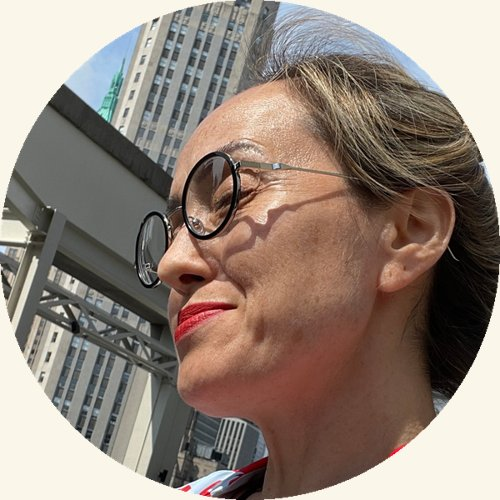
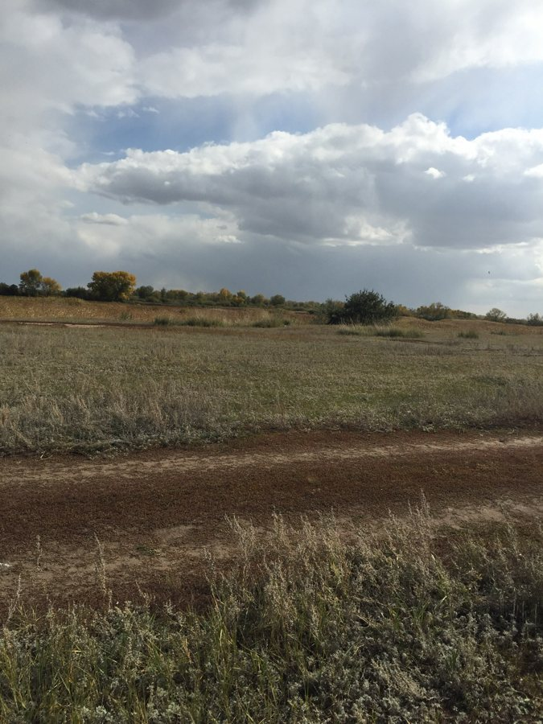

data analyst · researcher · novelist
I build models people can use, and ask what the numbers mean for people
Applied mathematics, a background in regulatory compliance, and a writer's ear. My current independent research asks how durable a college major's earnings really are as jobs shift and AI changes the work.

me, Nov 2026
independent research · Nov 2026 – present
How Durable Are the Earnings?
Most "best majors" lists answer one question: how well will I earn with this major? I asked a second one: how reliable and long-lasting are those earnings in New York? The project follows 179 New York bachelor's majors into the jobs their graduates hold, using only public data.
0.26
how closely pay and durability move together. a high salary is not a hedge
17 of 21
job groups where official forecasts underestimated growth. choosing a major = betting on a forecast
1 in 3
US businesses now use AI. in some of the best-paid majors, employers haven't caught up yet
the case board · what the data revealed
Who lands softly when AI moves in?
New York majors, followed into the jobs they lead to, the doors out of those jobs, and the people in them
AI doesn't check your salary
the best-paid and the lowest-paid majors can face the same AI pressure
Math travels. Code, right now, doesn't
a math degree opens about 18 doors to similar-paying work. computer science: fewer than 1 that isn't under the same AI pressure
16% of New York jobs: a hard landing
older workforce, few ways out, high AI pressure, all at once. think office clerks, secretaries, bookkeepers, accountants
Forecasts couldn't rank majors
a decade later, the official growth projections had put majors in no better order than chance
Firm ground comes with more doors
majors whose jobs hold up also tend to have more ways out. nursing: about 36
Same major, different cushion
selective schools: about +18% pay in the same major. for-profits: about −18%. SUNY and CUNY grads sit on the firmest ground
Colleges follow enrollment, not AI
programs in the most AI-pressured majors aren't closing any faster. yet
The manager's 27 doors
a hotel manager's skills bridge into dozens of other management jobs. retraining into code can mean walking past them to the most crowded door
red thread: where it hurts green thread: where there's a way out tendencies, not predictions
built in Python on public data: Dept. of Education, BLS, NYS DOL, IPEDS, U.S. Census Bureau
earlier: what does a major earn? what is a New York major worth?
During my internship with the Institutional Effectiveness team at Empire State University, I replicated The HEA Group's "What Your Major is Worth" for New York, and proposed and built extensions comparing bachelor's with master's and post-bachelor's certificates, plus earnings benchmarks for graduates over 34. The durability question grew out of that work.
fiction · in progress
The Wind Girl
my first novel, inspired by real life

me, little

the steppe near home
A novel told by the Wind, written like a diary, felt like a prayer
“Someone might think the heroine has her head in the clouds. They’re right. She talks to the Wind. And it knows her better than she knows herself”
🎵 the sound of the novel: Güldiyar Tanrıdağlı — Umutsuz Aşk
The Wind has known her since she was a little girl, dancing with her father and singing along with him in the mornings. It knew the girl who saved her coins for a bun instead of the tram and walked home through the night city, happy. It knew the corner where she hid with her books, and the taste of the first imported chocolate bar after perestroika, shared and remembered for years.
It followed her from the steppe to a new country, where she raised her daughter while rebuilding her career from the ground up, an ocean away from her family. And it watched her love a man who measured everything in what he owned... including her. Day by day, she dimmed herself to fit his world.
But some evenings she still put on her headphones and danced in front of the mirror, just for herself.
This is a story of love that warms and love that cages, and of the quiet courage it takes to leave a man who only wanted her to fit. And it is the story of a mother and daughter who collide like two stars, and still belong to the same sky.
The Wind is not only the narrator but a character. There is a place with no windows, where fears speak in other people’s voices. The Wind cannot enter it. It can only wait by the window she has not yet opened.
The pages read like an old notebook, with photographs, handwriting, and lines sometimes soaked with tears, sometimes with laughter. Kazakh küi, faith, and the language of the steppe run through a modern story of love and immigration.
Inspired by real life. Not quite a Hollywood happy ending, but a way back to her own light.
© Wind Girl Novel
I write in English, Russian and Kazakh. My creative writing was honored with the Nicholas Pekearo Scholarship.
read the short storyThe Fur Hat →a Soviet childhood, one mink hat, and a family court that met at breakfast. the piece that helped me earn the scholarshipa chapter from The Wind Girl
About my Mother 🤍 →
care that shone like breathing, and the blanket she never kept for herself
a chapter excerpt from The Wind Girl
Her Father’s Mornings ☀️ →
who taught her that love could be joyful
a chapter excerpt from The Wind Girl
The Map and the Road 🗺️ →
a mother, a daughter, and two stars on one sky
a note · Nov 2026 · in Russian
Ward 27 🌙 →
indifference, dignity and one night
a note from writing The Wind Girl
Under the Glass Dome 🌴 →
a dark Friday, a sunny Saturday under the palms
follow the novel on Instagramliterary life
My little celebration
I'm going to meet Boris Akunin!
notes from the city
New York, 11 Years Later →
what helped me, and still does. then the standards I live by
articles · notes on life
Articles
article · Nov 2026
Professionalism doesn’t have to be loud ✨ →
one word, every table, and a note that made my day
article · Nov 2026
Beyond the Fear →
beautiful things lie beyond the fear
article
How to Package Yourself the Right Way →
image, words and presence
article
A Film About Your Own Life →
be the main character in your own frame
culture · films, plays, books
Culture
a ballet I'm looking forward to
Romeo & Juliet 🩰
my first ballet at Lincoln Center: Alexei Ratmansky's new Romeo & Juliet at New York City Ballet
a Broadway evening I'm looking forward to · spring 2027
Lost Lear 👑
Jessica Chastain in a new play inspired by King Lear · @lostlearplay
“Who is it that can tell me who I am?”
— Shakespeare, King Lear, Act 1, Scene 4
a sweet moment · Nov 2026
A Sweet Halloween 🎃 →
a Snickers, the 90s in Kazakhstan, and Halloween in New York
a trip home · Oct 2026
Issyk: Tragedy and Gold 🏔️ →
a turquoise lake, a 1963 mudflow, two legends and the Golden Man
a sweet moment · Nov 2026
A sweet Monday morning 🍫 →
chocolate cake from a kind coworker, tea with lemon, and thoughts about The Nutcracker
cinema · Nov 14
Spoonful of Love →
a film in Armenian, no subtitles, and a song I now play on repeat
theater · Oct 31
Delirium →
Khamatova and Burkovsky an arm's length away. not a play you watch, a play you live through
opera · April 29, 2025
Salome at the Met →
opening night, and a dress that waited three years for its moment
theater · March 22, 2025
Dakar 2000 →
the story didn't sweep me away. the actor's charm did
dance & theater · Oct 2023
Two nights in October →
a highline above the stage at BAM, and Daphne at Lincoln Center
Broadway · autumn 2023
My Day 🎂 →
a birthday just for me: Serendipity, The Cottage, and dancing in the aisle
dance · March 2025
MOMO, Batsheva →
Ohad Naharin at BAM. the line between "I" and "we"
videos
coming up
book readings
I'm organizing readings of The Wind Girl and my short stories, and I'll post the videos here. want to host one or come along? write to me
How durable are the earnings? a 5-minute walkthrough
what the durability index shows, and what it does not
a reading from The Wind Girl
first reading to be announced
a spoonful of me
A spoonful of me 🥄 →
who I am, what I do by day, and what I make in my free time
let's talk
For field-by-field results, analytics roles, speaking or the novel, send me a note